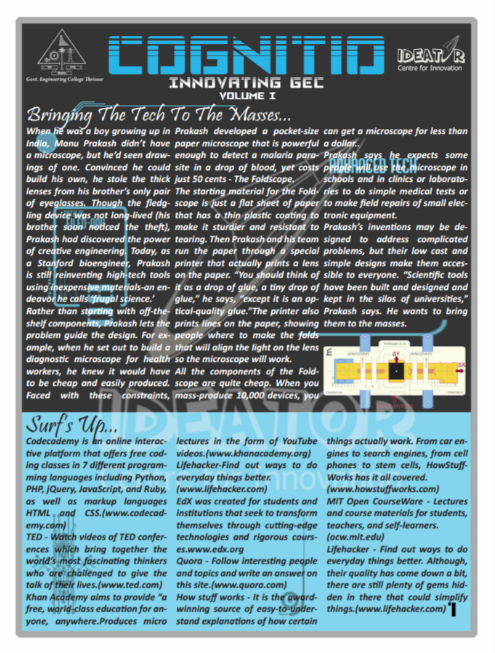
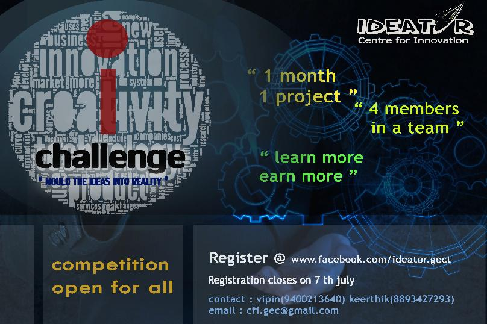
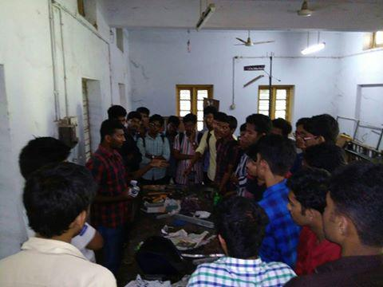
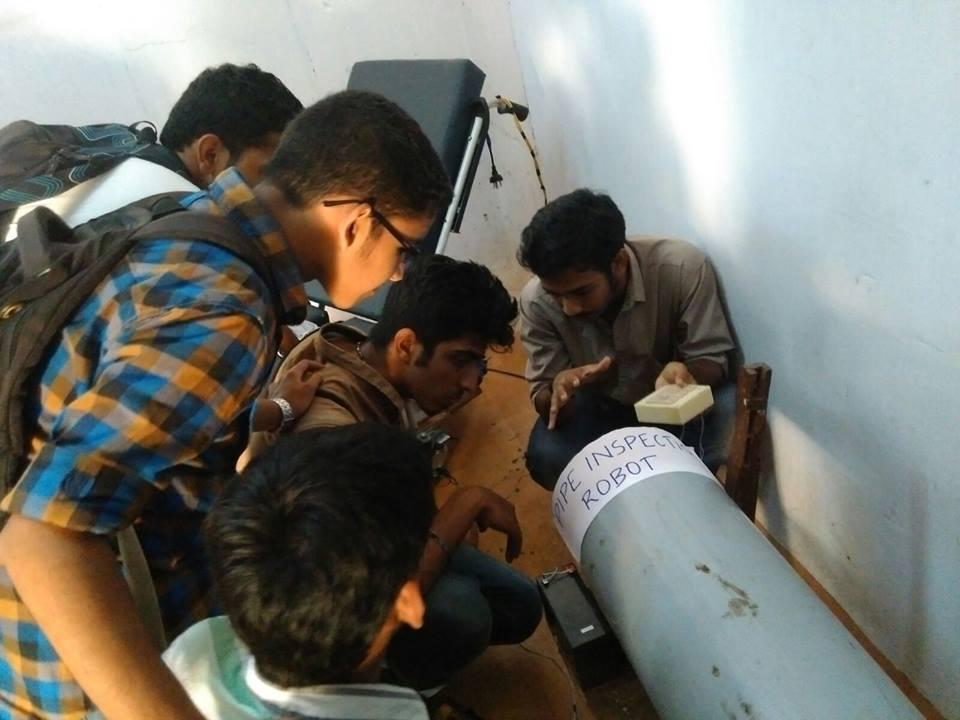

Team Ideator is conducting regular meetings on various projects and other new technologies. Every Wednesday team Ideator conducts a general body meeting and in the meeting we discuss the future plans, new projects and also the new technologies. Also every week a work is allotted to each student, which can improve his/her technical knowledge, who has come for the meeting and also we provide them with a platform to share their bit of knowledge and idea. The meeting
Time : 9:30 am to 5:00 pm
1) COGNITO
 This year Ideator decided to bring forth a technical publication which apart from showcasing innovations at Ideator; focuses on getting the latest technologies and news in the sci-tech world and the facilities available at college they can make use of to realize their ideas.2) IDEA CHALLENGE
 “Imagination is the key to yonder, into a world that is utopian and yet to realise”. The path of innovation and new ventures into the unconquered horizons of technology should be the holy grail of the current generation of technocrats. To give the GECians a head start, IDEATOR – The GECThrough Idea Challenge we invited project ideas from students at GECT.The top two ideas were selected and technical and financial guidance were given to the teams.The projects that were selected are i) Automatic Sealing Machine ii) Pipe Inspection Robot The 2 projects have been completed and prototypes have been build. We will be launching phase 2 of Idea Challenge in April 2016.
3)Familiarisation of tools used in Mechanical Workshop
 A Workshop was conducted to familiarise the different tools used in the mechanical workshop by Nithin George of S8 Mechanical.
5)ORIENTATION FOR 1st YEARS
 The first years were given an orientation about what is Ideator and what ideator is doing for our college. They were made aware of the importance of attaining technical knowledge and as an engineer their role to contribute to the society. More than 50 students from first year alone attended the orientation programme and also they are showing keen interest in the activities of Ideator.
Project Expo
Session with Innovators of our times
Robo Race
Water Rocket